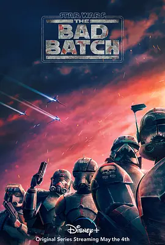

8.4
星球大战：异等小队 第一季
Star Wars: The Bad Batch Season 1
2021
美国
评分 8.4
导演:
斯图尔德·李
演员:
迪·布莱德利·贝克 / 米歇尔·洪 / 诺希尔·达拉尔 / 连姆·奥布赖恩 / 雷亚·普尔曼
类型:
冒险,剧情,动作
剧情简介
克隆人战争刚刚落幕，银河系的权力格局在短时间内被彻底改写。由基因结构异常而形成的“异等小队”，因体能、感知或战斗技巧的差异，被视为不稳定却拥有高度价值的特殊部队。他们在帝国崛起的混乱之初被迫脱离原有编制，失去明确立场，也失去依靠，只能依凭彼此在阴影密布的星际航路中寻找新的方向。团队中的成员性格迥异：有人擅长战术规划，有人以蛮力压制敌军，有人精准冷静，有人擅长技术破解。他们的行动往往在极端条件下进行，从废弃基地到黑市星球，再到帝国的高压据点，每一次任务都让他们看到银河系在新秩序下迅速变得陌生。随着名为欧米伽的神秘女孩加入，小队的内部关系开始出现新的温度与牵引，而她的存在也牵动着更多隐秘线索。帝国的扩张令许多原共和国支持者被迫沉默或逃离，异等小队在途中遇到旧日盟友，也遇到立场突然改变的熟悉身影。为了在混乱中生存，他们不得不做出在过去难以想象的选择——有时是避战，有时是营救，有时是背离命令。故事在不断的奔逃与对抗中展开，既有激烈的枪火、追捕与突袭，也有成员之间逐渐成形的信任、矛盾与成长。这部作品将“星战”中常被忽视的克隆人命题放大，让观众看到士兵在体制之外寻找自我时的孤独与力量。他们不是完美的英雄，却在动荡星河中以最本能的方式守住彼此。